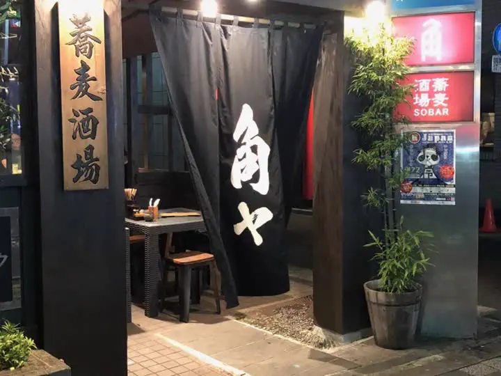

蕎麦酒場 角ヤ 春日テラス SOBA SAKABA KADOYA — KASUGA TERRACE
TERRACE
外の風にあたりながら一杯。
〆はもちろん、蕎麦で。
湯島駅を出てすぐ、春日通りのほど近くにある「蕎麦酒場 角ヤ 春日テラス」。店先のテラス席で、季節の空気を感じながらハイボールや日本酒を。店内はカウンターと小さなテーブルで、お一人でも気兼ねなく。蕎麦前のつまみを楽しんで、最後は蕎麦で〆る、角ヤの楽しみ方はここでも同じです。
上野広小路・御徒町からは歩いて6分ほど。湯島・上野エリアで、深夜4時まで蕎麦とお酒を楽しめます。
- 湯島駅 徒歩1分、御徒町・上野広小路からも徒歩圏
- テラス席あり（天候による）
- 〆の蕎麦、蕎麦前のつまみ
- 貸切のご相談承ります
- 深夜4時まで（L.O. 3:00）
- 各種クレジットカード対応


店舗情報shop information
| 店名 | 蕎麦酒場 角ヤ 春日テラス（ソバサカバ カドヤ） |
|---|---|
| 住所 | 〒113-0034 東京都文京区湯島3-46-1 1F |
| 電話 | 03-3834-4270 |
| 営業時間 | 18:00〜翌4:00（L.O. 3:00） |
| 定休日 | 日曜日 |
| お支払い | VISAMasterJCBAMEXDiners |
| 席 | カウンター・テーブル・テラス席／貸切相談可 |
| アクセス | 東京メトロ千代田線 湯島駅 徒歩1分／JR御徒町駅・上野広小路駅 徒歩6分 |
| SNS・掲載 |
感染症の流行状況や天候により、営業時間・定休日・テラス席のご利用が記載と異なる場合がございます。ご来店時は事前に店舗にご確認ください。
最新情報instagram @kadoya_terasu

kadoya_terasu この投稿を Instagram で見るよくあるご質問faq
蕎麦酒場 角ヤ 春日テラスは何時まで営業していますか？
18:00から翌4:00まで（ラストオーダー 3:00）営業しています。定休日は日曜日です。
湯島駅や上野からの行き方は？
東京メトロ千代田線 湯島駅 3番出口を出てすぐ、徒歩1分です。春日通り沿いから一歩入った、テラス席のある店です。JR御徒町駅・上野広小路駅からは徒歩6分です。
テラス席はありますか？
店先にテラス席があります。天候によりご利用いただけない場合があります。
貸切はできますか？
貸切のご相談を承っています。お電話（03-3834-4270）でお問い合わせください。
一人でも入れますか？
はい。店内はカウンターと小さなテーブルで、お一人でも気兼ねなくご利用いただけます。
クレジットカードは使えますか？
VISA・Master・JCB・AMEX・Diners がご利用いただけます。